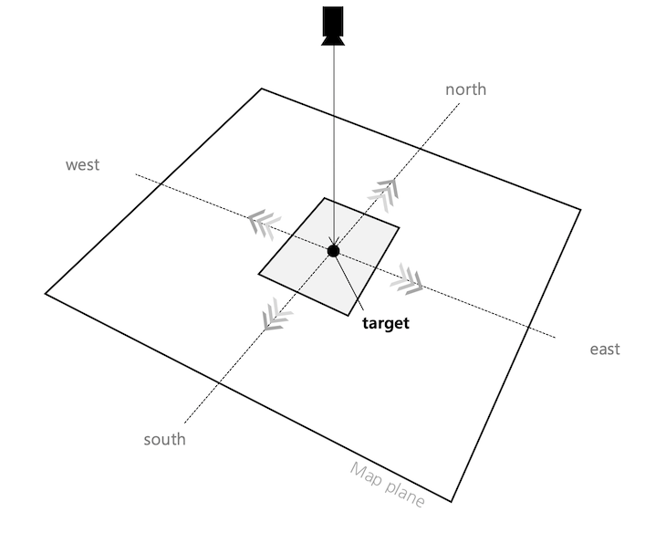
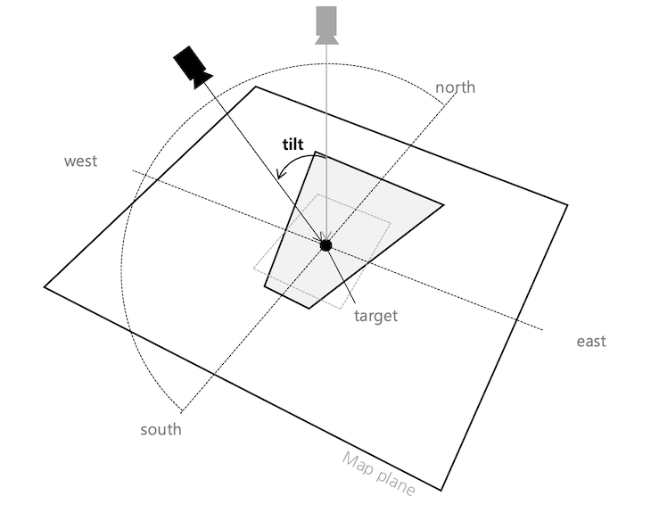
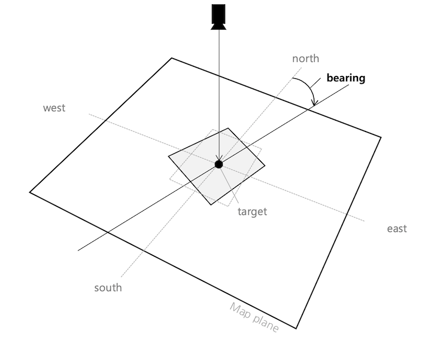
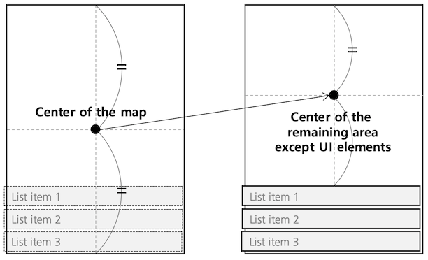
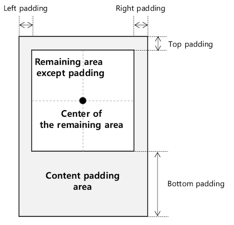

Camera and Projection
The NAVER Maps SDK displays a map in a way of a camera looking at the map on the other side of your screen. By moving, zooming in or out, tilting and rotating the camera, you can move your map as you want.
Camera position
The position of a camera is represented with coordinates of the target position where the camera is located, zoom level, tilt, and bearing of the camera. NMFCameraPosition is a class that represents the position of a camera. All properties of the NMFCameraPosition class are readonly, so each of them can be specified by a constructor, and properties of the object once created cannot be modified.
The following code example creates an NMFCameraPosition object.
let cameraPosition = NMFCameraPosition()
Swift
let cameraPosition = NMFCameraPosition()
Objective-C
NMFCameraPosition *cameraPosition = [NMFCameraPosition new];
Target position
target is a property that represents coordinates of the target position where the camera is located. If the target position changes, the map moves in the four cardinal directions.

Zoom level
zoom is a property that represents the zoom level of the camera. The zoom level represents the scale of the map. The smaller the zoom level is, the smaller the scale of the map is, and vice versa. At larger zoom levels, more detailed information is displayed on the map.
Tilt
tilt is a property that represents the viewing angle of the camera. The camera looks down the ground slantingly by the tilt angle. If the tilt angle is 0, the camera vertically looks down the ground; as the tilt angle increases, the camera view is gradually tilted towards the ground. Therefore, the bigger the tilt angle is, the farther the camera can view. If the camera is tilted, the map is shown in perspective mode. That is, based on the center of the map, distant locations become smaller while closer locations become larger.

Heading angle
heading is a property that represents the heading angle of the camera. Heading is the direction in which the camera looks. The heading angle is 0 when the camera faces the north, being measured in degrees clockwise from north. Accordingly, the bearing angle is 90 when the camera faces the east, and 180 when the west.

View and camera
The camera is basically located at the center of the map view. However, content padding affects the position of the camera.
Current camera position
You can call NMFMapView.cameraPosition to get the current position of the camera.
The following code example gets the camera’s current position.
let cameraPosition = mapView.cameraPosition
Swift
let cameraPosition = mapView.cameraPosition
Objective-C
CameraPosition *cameraPosition = self.mapView.cameraPosition;
Content padding
You can call NMFMapView.contentInset with a UIEdgeInsets object to specify content padding. When user interfaces are displayed on the map as shown in the figure below, the position of the camera located at the center of the map view does not match the center of the map users actually view.

In this case, you can specify content padding to exclude the area covered by the UI elements. Then, the camera position is located at the center of the remaining area.

The following code example sets 200 px of content padding at the bottom.
mapView.contentInset = UIEdgeInsets(top: 0, left: 0, bottom: 200, right: 0)
Swift
mapView.contentInset = UIEdgeInsets(top: 0, left: 0, bottom: 200, right: 0)
Objective-C
self.mapView.contentInset = UIEdgeInsetsMake(0, 0, 200, 0);
Content padding does not change what users actually see. It does, however, change the center of the map where the camera is located, and thus, the position of the camera is changed.
Projection
The screen uses a coordinate system in pixels based on the upper left point, while the map uses a geographical latitude/longitude coordinate system. Using methods of the NMFProjection class, you can convert between screen pixel coordinates and latitude/longitude coordinates. You cannot directly create an instance of the NMFProjection class, so you should call NMFMapView.projection to get an instance.
The following code example gets an instance of the NMFProjection class.
let projection = mapView.projection
Swift
let projection = mapView.projection
Objective-C
NMFProjection *projection = self.mapView.projection;
Conversion between screen coordinates and map coordinates
You can use -latlngFromPoint: to convert screen coordinates into latitude/longitude coordinates, and -pointFromLatLng: to convert latitude/longitude coordinates into screen coordinates.
The following code example converts the screen coordinates, (100, 100) into latitude/longitude coordinates.
let coord = projection.latlng(from: CGPoint(x: 100, y: 100))
Swift
let coord = projection.latlng(from: CGPoint(x: 100, y: 100))
Objective-C
NMGLatLng *coord = [projection latlngFromPoint:CGPointMake(100, 100)];
The following code example converts the latitude/longitude coordinates on the map, (37.5666102, 126.9783881) into the screen coordinates.
let point = projection.point(from: NMGLatLng(lat: 37.5666102, lng: 126.9783881))
Swift
let point = projection.point(from: NMGLatLng(lat: 37.5666102, lng: 126.9783881))
Objective-C
CGPoint point = [projection pointFromLatLng:NMGLatLngMake(37.5666102, 126.9783881)];
Scale
Since the earth is the shape of a sphere in three dimensions, the earth’s surface cannot be represented in two dimensions without distortion. The NAVER Maps SDK uses Web Mercator projection to render a three dimensional ellipsoid of the earth to a two dimensional map surface, causing the scale of the map to change depending on a zoom level as well as latitude. Using metersPerPixel, you can get the scale of the current camera position.
The following code example gets the scale of the current camera position.
let metersPerPixel = projection.metersPerPixel()
Swift
let metersPerPixel = projection.metersPerPixel()
Objective-C
CLLocationDistance metersPerPixel = projection.metersPerPixel;
Using -metersPerPixelAtLatitude:zoom:, you can get the scale based on a specified latitude and zoom level, regardless of the current camera position.
The following code example gets the scale based on various latitudes and zoom levels.
// Equator, zoom level 10
let metersPerPixel1 = projection.metersPerPixel(atLatitude: 0, zoom: 10)
// Latitude 35 degrees, zoom level 10: The scale gets bigger than the equator.
let metersPerPixel2 = projection.metersPerPixel(atLatitude: 35, zoom: 10)
// Latitude 35 degrees, zoom level 14: The scale gets bigger than the zoom level 10.
let metersPerPixel3 = projection.metersPerPixel(atLatitude: 35, zoom: 14)
Swift
// Equator, zoom level 10
let metersPerPixel1 = projection.metersPerPixel(atLatitude: 0, zoom: 10)
// Latitude 35 degrees, zoom level 10: The scale gets bigger than the equator.
let metersPerPixel2 = projection.metersPerPixel(atLatitude: 35, zoom: 10)
// Latitude 35 degrees, zoom level 14: The scale gets bigger than the zoom level 10.
let metersPerPixel3 = projection.metersPerPixel(atLatitude: 35, zoom: 14)
Objective-C
// Equator, zoom level 10
CLLocationDistance metersPerPixel1 = [projection metersPerPixelAtLatitude:0 zoom:10];
// Latitude 35 degrees, zoom level 10: The scale gets bigger than the equator.
CLLocationDistance metersPerPixel2 = [projection metersPerPixelAtLatitude:35 zoom:10];
// Latitude 35 degrees, zoom level 14: The scale gets bigger than the zoom level 10.
CLLocationDistance metersPerPixel3 = [projection metersPerPixelAtLatitude:35 zoom:14];